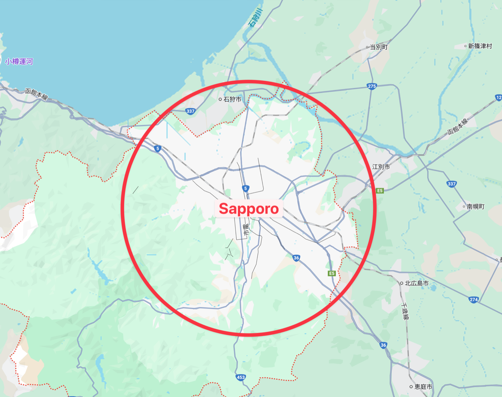
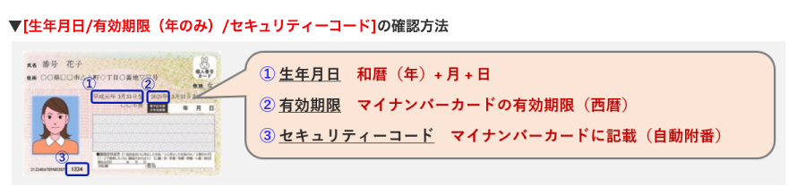
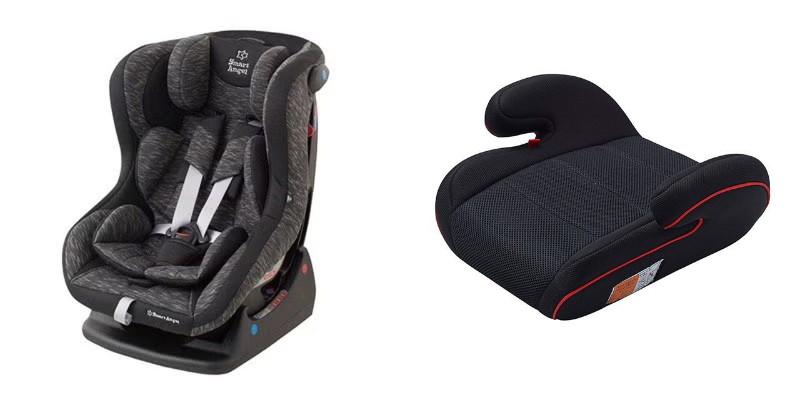
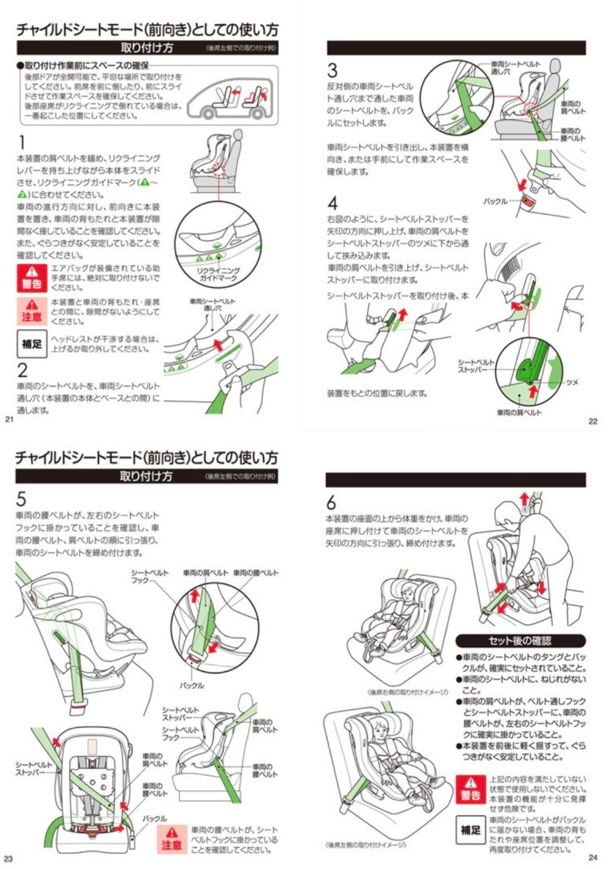
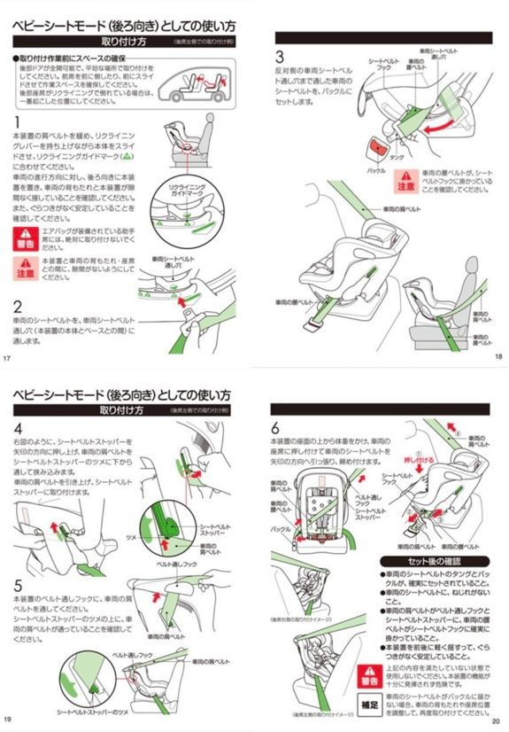

よくある質問
目次
予約について
【以下の条件を満たす方のみご利用可能です】
(1) 満18歳以上である方
(2) 免許証取得後6ヶ月以上の方
(3) 過去2年以内に重大事故、重大違反がない方
(4) 弊社利用規約に同意頂ける方
(5) インターネット通信端末（スマートフォンなど）を持っている方
変更内容によって方法が異なります。
🔹 日程・車種の変更
料金が変更になるため、原則一度キャンセルいただき再予約となります。
直前で予約を取り直すとキャンセル料が掛かってしまうなどの場合はLINEにてお問い合わせください。
🔹 貸出の時間・場所の変更
貸出24時間前までLINEにて発行するマイページにて受付
※期限を過ぎると承認制
🔹 返却の時間・場所の変更
返却2時間前までLINEにて発行するマイページにて受付
※期限を過ぎると承認制
🔹 オプション・補償の変更
貸出前日19:00までLINEにて発行するマイページにて受付
※承認・事前決済制
ご予約時に事前決済制となります（じゃらん除く）。
じゃらんのみご予約時ではなくご予約後にメール・LINEより決済用リンクを送付いたします。
原則貸出3日前の19:00までにお支払いをお願いいたします。
現地や現金でのお支払いは一切対応できませんのでご了承ください。
予約媒体により発行元が異なります。
🔹*オフィシャルサイト*・*じゃらん* からご予約の方
弊社より発行いたします。
LINEにて”宛名”とともに領収書発行希望の旨お問い合わせください。
🔹*スカイチケット・楽天・エアトリ・レンタカードットコム*からご予約の方
発行元は各サイト運営企業様になります。
各サイトより取得可能です。
キャンセルについて
キャンセルのタイミングによってキャンセル料が発生します。
【予約取消料(キャンセル料)】
| キャンセルのタイミング | キャンセル料率 |
| 借受予約日の7日以前 | 無料 |
| 借受予約日の6日前から3日前 | 料金総額の20% |
| 借受予約日の2日前から前日 | 料金総額の30% |
| 借受予約日の当日以降 | 料金総額の50% |
台風などによる不可抗力の場合は（北海道着の）航空便の欠航証明書をご提示の上キャンセルを無料で承っております。
詳細は【悪天候などによる不可抗力のキャンセルについて】ご確認ください。
デリバリーについて
予約媒体で打ち合わせの流れが異なります。
🔹*オフィシャルサイト*からご予約の方
予約時にデリバリー時間や場所のご入力をいただけます。
詳細は【ご利用案内_オフィシャル】をご確認ください。
🔹*スカイチケット・じゃらん・楽天・エアトリ*からご予約の方
ご予約完了後に公式LINE内の受付フォームにて情報を入力いただきます。
詳細は【ご利用案内_OTA】をご確認ください。
原則、札幌市かつ札幌駅より半径20km圏内となります。
札幌の定山渓を除く主要エリアはほぼ含んでおりますが、距離が際どい場合や市外希望の場合はLINEにてお問い合わせください。
※新千歳空港は対象範囲外となります

画像はイメージです
車両の通行ができ、一時停車が可能なエリアであれば原則どこへでもお届けします。
主にホテルや駅・空港・自宅を選ばれる方が多いです。
当日の交通状況により希望場所からご移動をお願いいただく場合がございます。
貸し出しについて
事前に指定いただいた時間・場所へデリバリー（お届け）します。
【受け取り方法】
到着前後にデリバリースタッフよりLINEにて詳細位置や車両情報を連絡いたします。
ご準備が整いましたら受け取り対応をお願いします。
⚠️貸出時間からご連絡のないまま30分経過しますと貸出不可となることがございます。
無店舗型のデリバリー専門店です。
デリバリーとは車両をご希望先に配車するサービスです。
貸出予定日の24時間前まで変更可能です。
LINEにて発行するマイページにて受付いたします。
期日以降の変更は承認制となり、調整が難しい可能性がございますのでご了承ください。
⚠️営業時間(9:00-19:00)外の対応は不可となります。19:00の貸出時間を超えた場合、翌日での対応+キャンセル料金が発生いたしますのでお時間に余裕を持ってご計画ください。
⚠️システム上、各サイトの予約画面上は時間の記載が変わらない場合がございますが、マイページに表示されている情報にて準備をいたしますのでご安心くださいませ。
運転開始前にマイページより免許証（裏表）のお写真をアップロードください。
利用可能です。
＜マイナ免許証でのご利用時に必要な物＞
・ご利用者さまのマイナンバーカード
・「マイナ免許証読み取りアプリ（※2）」がインストールされたスマートフォン端末
※2：マイナンバーカードから運転免許情報を読み取るためのアプリ。
App StoreもしくはGoogle Play Storeにてインストールいただけます。
マイナ免許証読み取りアプリ専用サイト（警察庁） https://myna-menkyo-app.npa.go.jp/index.html
デリバリースタッフでのアプリ読み取りなどには対応できませんのでご了承ください。
＜運転免許情報提示の流れ＞
従来の運転免許証に比べ、お手続きにお時間を頂く場合がございますので予めご了承ください。
[1]「マイナ免許証読み取りアプリ」を起動し、暗証番号入力画面の「氏名等も表示する」を有効にする。
[4桁の暗証番号（マイナ免許証登録時に設定）]と[生年月日/有効期限（年のみ）/セキュリティーコード]を入力します。
[2]「マイナ免許証読み取りアプリ」でマイナンバーカードから運転免許情報の読み取りを行います。
[3]画面に表示された運転免許情報をスタッフが確認いたします。※3
※3：運転免許情報確認のため、お客さまのスマートフォン端末を一時的にお預かりする場合がございます。予めご了承ください。

国際免許証による日本での運転につきましては発行国により異なります。
🔹ジュネーブ条約加盟国
*国際免許証・パスポート*の提示が必要となります。
🔹ジュネーブ条約加盟国以外
日本語翻訳つきの免許・*パスポート*の掲示が必要となります。
その他条件等ある場合がございますので、
詳しくは 【警視庁HP】をご確認ください。
返却について
事前に指定いただいた時間・場所へ回収に伺います。
【返却方法】
返却場所周辺にて燃料を満タン給油いただき、
到着しましたらLINEにて詳細位置のご連絡をお願いします。
デリバリースタッフが回収に参ります。
⚠️返却時間からご連絡のないまま30分経過しますと延長料金が発生する場合がございます。
ご返却予定時刻の2時間前まで変更可能です。
LINEにて発行するマイページにて受付いたします。
期日以降の変更は承認制となり、調整が難しい可能性がございますのでご了承ください。
⚠️営業時間(9:00-19:00)外の対応は不可となります。19:00のご返却時間を超えた場合、翌日での返却対応+1日分の追加料金が発生いたしますのでお時間に余裕を持ってお戻りください。
必要です。
燃料は必ず自動車メーカーの指定する燃料（レギュラー・ハイオク・ディーゼル）を給油して満タン状態にてご返却ください。
未給油でのご返却や燃料代のあと払いは対応できませんのでお時間に余裕を持ってご返却お願いします。
ガソリンスタンドの指定はございませんが、極力ご返却場所の近隣での満タン給油にご協力をお願いします。
領収書の提示は不要です。
車両について
原則選べません。同クラスの中からランダムとなります。
車両装備・色。仕様等も選べません。
🔹ハイクラスミニバンプラン（A/A2クラス）：アルファード/ヴェルファイア等（7〜8人乗り）
🔹ワンボックスカープラン（B/B2クラス）：ノア/デリカ等（7〜8人乗り）
🔹コンパクトSUVプラン（Cクラス）：ロッキー/CX-3等（5人乗り）
🔹コンパクトハイトワゴンプラン（Fクラス）：ソリオ等（5人乗り）
🔹コンパクトプラン（Gクラス）：デミオ等（5人乗り）
🔹セダン・スタンダードプラン（Hクラス）：アクセラ等（5人乗り）
🔹SUVプラン（Sクラス）：ハリアー/CX-5等（5人乗り）
予定段階での回答にはなりますが、LINEにてお問い合わせください。
予約状況に応じて当日まで変更の可能性ございますので、ご了承ください。
ミニバン・ワンボックスカーの場合は7〜8人乗りとございますため、
ご予約時に入力いただいた人数を元に選定いたします。
人数に変更がございましたらお早めにLINEよりお問い合わせください。
その他車両は5人乗りとなります。
ナビ・Bluetooth・ETC車載器が標準装備となります。
冬季期間はスタッドレスタイヤが標準装備となります。
ETCカードをご利用の場合は、お客様ご自身のETCカードをご持参ください。
その他装備や仕様は選べません。
全車両 4WD（四駆）仕様となります。
全車禁煙車両となります。
全車同乗不可となります。
オプションについて
こども用シート類のみとなります。
🔹チャイルドシート：1,000円
対象年齢：新生児〜4歳頃
適応体重：2.5〜18kg
前向き・後ろ向き兼用タイプ
🔹ジュニアシート：500円
対象年齢：3〜11歳頃
適応体重：15〜36kg
※どちらもISOFIXタイプではございません。

画像はイメージです・対象年齢・体重は目安です
こども用シートの取付・安全確認は原則お客様に行なっていただいております。
弊社スタッフでの取付・安全確認は対応できませんのでご了承ください。
ご乗車前に必ずご確認をお願いいたします。
【チャイルドシートの取り付け方】
前向き

後ろ向き

ETCカードのレンタルは行っておりません。
全車両にETC車載器を搭載しておりますので、ETCカードをご利用の場合は、お客様ご自身のETCカードをご持参ください。
LINEにて発行するマイページにて申請可能です。
ご出発前日19:00以降の変更は対応できませんのでご注意ください。
追加決済が発生する場合は事前決済制となります。
現地や現金でのお支払いは一切対応できませんのでご了承ください。
⚠️在庫に限りがございますので、ご利用の場合はお早めに申請ください。
⚠️システム上、各サイトの予約画面上はシートの記載が変わらない場合がございますが、弊社側にて把握しておりますのでご安心くださいませ。
補償について
基本補償・免責補償・NOC補償の3種類がございます。

🔹基本補償
・対人 無制限
・対物 無制限
・車両保証 車両時価総額まで（免責負担額 150,000 円）
・人身損害補償 3000 万円まで
価格：全プラン自動付帯
万が一のMAX負担額：250,000円
🔹免責補償
基本補償でカバーのできなかった車両保証の免責負担額150,000円がカバーされる補償
価格：1日あたり1,100円
万が一のMAX負担額：100,000円
🔹NOC（ノンオペレーションチャージ）補償
修理の期間中の休業補償となります。
・レンタカーで自走し予定の返還場所に返還されなかった場合・・・一律100,000円
・レンタカーで自走し予定の返還場所に返還された場合・・・・・・一律50,000円
※免責補償加入の方のみ加入可能
価格：1日あたり550円
万が一のMAX負担額：0円
※故意または過失状況によって補償が適応外になる場合がございます。
※MAX負担額はあくまで目安になります。
詳しくは【ご利用約款】をご確認ください。
LINEにて発行するマイページにて申請可能です。
ご出発の60分前以降の変更は対応できませんのでご注意ください。
追加決済が発生する場合は事前決済制となります。
現地や現金でのお支払いは一切対応できませんのでご了承ください。
⚠️システム上、各サイトの予約画面上は補償の記載が変わらない場合がございますが、弊社側にて把握しておりますのでご安心くださいませ。
トラブルについて
事故相手の有無で対応が異なります。
🔹事故相手なしの対応手順
① 安全確保・二次被害の防止
② 負傷者の確認と救護(怪我人がいれば救急通報)
③警察へ通報(義務)
④ 保険会社(三井住友海上 事故受付センター)へ連絡：0120-258-365
⑤ 弊社(HANDYMAN)へ連絡：LINEまたは050-1724-6197
今後の対応方法を調整いたします。
※時間外にご連絡いただいた場合は、翌営業日の対応となります。
🕘 営業時間9:00〜19:00
🔹事故相手ありの対応手順
① 安全確保・二次被害の防止
② 負傷者の確認と救護(怪我人がいれば救急通報)
③ 警察へ通報(義務)
④ 相手の情報を確認・交換（各情報写真を撮影すると確実です）
・名前、住所、電話番号
・運転免許証の確認
・車両のナンバー、保険会社名、保険契約者名など
・相手がレンタカーだった場合、その会社名と連絡先も確認
⑤ 保険会社(三井住友海上 事故受付センター)へ連絡：0120-258-365
⑥ 弊社(HANDYMAN)へ連絡：LINEまたは050-1724-6197
今後の対応方法を調整いたします。
※時間外にご連絡いただいた場合は、翌営業日の対応となります。
🕘 営業時間9:00〜19:00
自走可否により対応が異なります。
🔹自走可能な場合
引き続き同じ車両にてご移動お願いします。
破損箇所がある場合、事前にLINEへ連絡をください。
返却時に補償内容等ご説明いたします。
🔹自走不可の場合
①ロードサービス（お車救急隊）に連絡：0120-096-991（24時間対応）
②自走不可で現場から移動が必要な際はタクシー・公共交通機関にてご移動ください（移動費用補償上限20,000円/1人）。
⚠️ロードサービスを利用しない場合は移動費用の補償対象外となります
⚠️必ず移動費用の領収書を取得ください
③代車手配の可否を調整します。
⚠️距離や人員の状況により代車の手配が難しい場合がございますのでご了承ください。
自走可否により対応が異なります。
🔹自走可能な場合
① 安全確保・二次被害の防止
② 弊社（HANDYMAN）に連絡：LINEまたは050-1724-6197
今後の対応方法を調整いたします。
※時間外にご連絡いただいた場合は、翌営業日の対応となります。
🕘 営業時間9:00〜19:00
🔹自走不可の場合
① 安全確保・二次被害の防止
② ロードサービス（お車救急隊）に連絡：0120-096-991（24時間対応）
③ 弊社（HANDYMAN）に連絡：LINEまたは050-1724-6197
車両の入れ替え可否等について調整いたします。
⚠️距離や人員の状況により代車の手配が難しい場合がございますのでご了承ください。
⚠️時間外にご連絡いただいた場合は、翌営業日の対応となります。
🕘 営業時間9:00〜19:00
④現場から移動が必要な際はタクシー・公共交通機関にてご移動ください（移動費用補償上限20,000円/1人）。
⚠️ロードサービスを利用しない場合は移動費用の補償対象外となります
⚠️必ず移動費用の領収書を取得ください
Frequently Asked Questions
Bookings
【Only customers who meet all of the following conditions may rent from us】
(1) Aged 18 or over
(2) Have held a driver's license for at least 6 months
(3) No serious accidents or serious traffic violations in the past 2 years
(4) Able to agree to our terms and conditions
(5) Have an internet-connected device such as a smartphone
The method depends on what you would like to change.
🔹 Changing the dates or vehicle class
Because the price changes, in principle you need to cancel and book again.
If re-booking at short notice would result in a cancellation fee, please contact us on LINE.
🔹 Changing the delivery time or location
Accepted via My Page (issued through LINE) up to 24 hours before delivery.
※After this deadline, changes are subject to our approval.
🔹 Changing the collection time or location
Accepted via My Page (issued through LINE) up to 2 hours before collection.
※After this deadline, changes are subject to our approval.
🔹 Changing options or coverage
Accepted via My Page (issued through LINE) until 19:00 on the day before delivery.
※Subject to our approval and advance payment.
Payment is made in advance at the time of booking (except Jalan).
For Jalan bookings only, we send a payment link by email or LINE after your booking rather than at the time of booking.
In principle, please complete payment by 19:00 three days before delivery.
We cannot accept payment in person or in cash under any circumstances.
The issuer depends on where you booked.
🔹 Booked via the Official Site or Jalan
We issue the receipt.
Please contact us on LINE and tell us the name to be shown on the receipt.
🔹 Booked via skyticket, Rakuten, Airtrip or Rentalcar.com
The receipt is issued by the company operating each site.
You can obtain it from that site.
Cancellations
A cancellation fee applies depending on when you cancel.
【Cancellation fees】
| When you cancel | Cancellation fee |
| 7 days or more before the rental start date | Free |
| 6 to 3 days before | 20% of the total price |
| 2 days to 1 day before | 30% of the total price |
| On the rental start date or later | 50% of the total price |
In cases of force majeure such as a typhoon, we accept free cancellation if you present a cancellation certificate for a flight arriving in Hokkaido.
For details, please see 【Cancellations due to bad weather and other force majeure】.
Delivery
The process depends on where you booked.
🔹 Booked via the Official Site
You enter the delivery time and place when you book.
For details, please see 【How It Works — Official Site】.
🔹 Booked via skyticket, Jalan, Rakuten or Airtrip
After your booking is complete, you enter the details in the request form inside our official LINE account.
For details, please see 【How It Works — OTA】.
In principle, within Sapporo City and within a 20 km radius of Sapporo Station.
This covers almost all of the main areas of Sapporo except Jozankei. If your location is borderline, or if you would like delivery outside the city, please contact us on LINE.
※New Chitose Airport is outside our delivery area.
※Please see the map in the Japanese section above.
In principle we deliver anywhere a vehicle can drive to and stop briefly.
Most customers choose a hotel, train station, airport or their home.
Depending on traffic conditions on the day, we may ask you to move from your preferred spot.
Vehicle Handover
We deliver the vehicle to the time and place you specified in advance.
【How to receive the vehicle】
Shortly before or after we arrive, our delivery staff will message you on LINE with the exact location and the vehicle details.
Please come and take delivery when you are ready.
⚠️ If we do not hear from you for 30 minutes after your rental start time, we may not be able to hand over the vehicle.
We are a delivery-only service with no physical store.
"Delivery" means we bring the vehicle to the location you request.
Yes, up to 24 hours before your scheduled rental start.
Please apply via My Page, which is issued through LINE.
Changes after that deadline are subject to our approval, and we may not be able to accommodate them.
⚠️ We cannot operate outside our business hours (9:00-19:00). If the handover goes past 19:00, it will be moved to the following day and a cancellation fee will apply, so please allow plenty of time.
⚠️ Due to system limitations, the time shown on the booking site may not change, but we prepare based on the information shown on My Page, so please rest assured.
Please upload photos of the license (front and back) via My Page before driving.
🌍 If the license was issued outside Japan, please see "Q. Can I use an international driving permit?" below.
Yes, you can.
＜What you need＞
・Your My Number Card
・A smartphone with the "My Number Driver's License Reader App" (※2) installed
※2: An app for reading driver's license information from a My Number Card.
You can install it from the App Store or Google Play Store.
Official app site (National Police Agency) https://myna-menkyo-app.npa.go.jp/index.html
Please note that our delivery staff cannot operate the app on your behalf.
＜How to present your license information＞
Please note this may take longer than with a conventional driver's license.
[1] Open the "My Number Driver's License Reader App" and turn on "Also display name etc." on the PIN entry screen.
Enter your [4-digit PIN (set when you registered your My Number driver's license)] and [date of birth / expiry year / security code].
[2] Use the app to read the driver's license information from your My Number Card.
[3] Our staff will check the license information shown on the screen. ※3
※3: We may need to hold your smartphone temporarily in order to check the license information.
Whether you may drive in Japan with an international driving permit depends on the country that issued it.
🔹Countries party to the Geneva Convention
You must present your international driving permit and passport.
🔹Countries not party to the Geneva Convention
You must present your license together with an official Japanese translation and your passport.
Other conditions may apply, so please see the 【Tokyo Metropolitan Police Department website】 for details.
Returns
We come to collect the vehicle at the time and place you specified in advance.
【How to return the vehicle】
Please refuel the tank to full near the return location, and message us on LINE with your exact position once you arrive.
Our delivery staff will come to collect the vehicle.
⚠️ If we do not hear from you for 30 minutes after your return time, an extension fee may apply.
Yes, up to 2 hours before your scheduled return time.
Please apply via My Page, which is issued through LINE.
Changes after that deadline are subject to our approval, and we may not be able to accommodate them.
⚠️ We cannot operate outside our business hours (9:00-19:00). If the return goes past 19:00, it will be handled the following day and an additional day's charge will apply, so please allow plenty of time.
Yes.
Please fill the tank with the fuel specified by the manufacturer (regular petrol, high-octane petrol or diesel) and return the vehicle with a full tank.
We cannot accept a vehicle returned without refueling, and fuel costs cannot be paid afterwards, so please allow plenty of time.
No, we do not specify a petrol station, but please fill the tank as close to the return location as possible.
No, you do not need to show a receipt.
Vehicles
In principle no. A vehicle is assigned at random from within the same class.
Equipment, colour and specification cannot be chosen either.
🔹High-Class Minivan Plan (Class A/A2): Alphard, Vellfire, etc. (7-8 seats)
🔹One-Box Van Plan (Class B/B2): Noah, Delica, etc. (7-8 seats)
🔹Compact SUV Plan (Class C): Rocky, CX-3, etc. (5 seats)
🔹Compact High-Roof Wagon Plan (Class F): Solio, etc. (5 seats)
🔹Compact Plan (Class G): Demio, etc. (5 seats)
🔹Sedan / Standard Plan (Class H): Axela, etc. (5 seats)
🔹SUV Plan (Class S): Harrier, CX-5, etc. (5 seats)
We can give you a provisional answer, so please ask us on LINE.
Please note that the vehicle may change up to the day itself depending on our booking situation.
Minivans and one-box vans have 7-8 seats, so we select the vehicle based on the number of passengers you entered when booking.
If the number of passengers changes, please contact us on LINE as soon as possible.
All other vehicles have 5 seats.
A navigation system, Bluetooth and an ETC on-board unit are fitted as standard.
Studless winter tyres are fitted as standard during the winter season.
If you wish to use ETC, please bring your own ETC card.
Other equipment and specifications cannot be chosen.
All of our vehicles are 4WD.
All of our vehicles are non-smoking.
Pets are not allowed in any of our vehicles.
Options
Child seats only.
🔹Child seat: 1,000 yen
Suitable age: newborn to approx. 4 years
Suitable weight: 2.5-18 kg
Can be used both forward-facing and rear-facing.
🔹Junior (booster) seat: 500 yen
Suitable age: approx. 3-11 years
Suitable weight: 15-36 kg
※Neither is an ISOFIX type.
※The photos, suitable ages and weights are a guide only. Please see the photos in the Japanese section above.
In principle, fitting and safety-checking child seats is done by the customer.
Our staff are not able to fit them or check their safety.
Please always check the seat before you set off.
【How to fit a child seat】
Please see the photos for forward-facing and rear-facing fitting in the Japanese section above.
We do not rent ETC cards.
Every vehicle has an ETC on-board unit, so if you wish to use ETC, please bring your own ETC card.
You can apply via My Page, which is issued through LINE.
Please note that we cannot accept changes after 19:00 on the day before departure.
If an additional charge applies, it must be paid in advance.
We cannot accept payment in person or in cash under any circumstances.
⚠️ Stock is limited, so please apply as early as possible.
⚠️ Due to system limitations, the seat may not appear on the booking site, but we have it on record, so please rest assured.
Coverage
There are three types: Basic Coverage, Excess Coverage and NOC Coverage.
※Please see the chart in the Japanese section above.
🔹Basic Coverage
・Personal injury: unlimited
・Property damage: unlimited
・Vehicle damage: up to the market value of the vehicle (deductible: 150,000 yen)
・Personal accident coverage: up to 30,000,000 yen
Price: automatically included in all plans
Maximum you could pay: 250,000 yen
🔹Excess Coverage
Covers the 150,000 yen vehicle damage deductible that Basic Coverage does not cover.
Price: 1,100 yen per day
Maximum you could pay: 100,000 yen
🔹NOC (Non-Operation Charge) Coverage
Covers our loss of business while the vehicle is being repaired.
・If the vehicle is not driven back to the agreed return location: a flat 100,000 yen
・If the vehicle is driven back to the agreed return location: a flat 50,000 yen
※Available only to customers who have taken Excess Coverage.
Price: 550 yen per day
Maximum you could pay: 0 yen
※Coverage may not apply depending on intent or negligence.
※The maximum amounts above are a guide only.
For details, please see 【Rental Terms and Conditions】.
You can apply via My Page, which is issued through LINE.
Please note that we cannot accept changes from 60 minutes before departure.
If an additional charge applies, it must be paid in advance.
We cannot accept payment in person or in cash under any circumstances.
⚠️ Due to system limitations, the coverage may not appear updated on the booking site, but we have it on record, so please rest assured.
Trouble
The procedure depends on whether another party is involved.
🔹If no other party is involved
① Make the scene safe and prevent further accidents
② Check for injuries and give first aid (call an ambulance if anyone is hurt)
③ Report it to the police (this is a legal obligation)
④ Contact the insurance company (Mitsui Sumitomo Insurance Accident Desk): 0120-258-365
⑤ Contact us (HANDYMAN): LINE or 050-1724-6197
We will arrange what happens next.
※If you contact us outside business hours, we will respond on the next business day.
🕘 Business hours 9:00-19:00
🔹If another party is involved
① Make the scene safe and prevent further accidents
② Check for injuries and give first aid (call an ambulance if anyone is hurt)
③ Report it to the police (this is a legal obligation)
④ Check and exchange the other party's details (photographing each item is the surest way)
・Name, address, phone number
・Check their driver's license
・Vehicle registration number, insurance company, policyholder name, etc.
・If the other party is also driving a rental car, check the rental company name and contact details
⑤ Contact the insurance company (Mitsui Sumitomo Insurance Accident Desk): 0120-258-365
⑥ Contact us (HANDYMAN): LINE or 050-1724-6197
We will arrange what happens next.
※If you contact us outside business hours, we will respond on the next business day.
🕘 Business hours 9:00-19:00
It depends on whether the vehicle can still be driven.
🔹If the vehicle can still be driven
Please continue your trip in the same vehicle.
If there is any damage, please contact us on LINE in advance.
We will explain the coverage when the vehicle is returned.
🔹If the vehicle cannot be driven
① Contact the roadside assistance service (Okuruma Kyukyutai): 0120-096-991 (24 hours)
② If you need to leave the scene, please travel by taxi or public transport (travel costs covered up to 20,000 yen per person).
⚠️ If you do not use the roadside assistance service, your travel costs are not covered.
⚠️ Please be sure to obtain a receipt for your travel costs.
③ We will check whether a replacement vehicle can be arranged.
⚠️ Depending on the distance and staff availability, we may not be able to arrange a replacement vehicle.
It depends on whether the vehicle can still be driven.
🔹If the vehicle can still be driven
① Make the scene safe and prevent further accidents
② Contact us (HANDYMAN): LINE or 050-1724-6197
We will arrange what happens next.
※If you contact us outside business hours, we will respond on the next business day.
🕘 Business hours 9:00-19:00
🔹If the vehicle cannot be driven
① Make the scene safe and prevent further accidents
② Contact the roadside assistance service (Okuruma Kyukyutai): 0120-096-991 (24 hours)
③ Contact us (HANDYMAN): LINE or 050-1724-6197
We will discuss whether the vehicle can be replaced.
⚠️ Depending on the distance and staff availability, we may not be able to arrange a replacement vehicle.
⚠️ If you contact us outside business hours, we will respond on the next business day.
🕘 Business hours 9:00-19:00
④ If you need to leave the scene, please travel by taxi or public transport (travel costs covered up to 20,000 yen per person).
⚠️ If you do not use the roadside assistance service, your travel costs are not covered.
⚠️ Please be sure to obtain a receipt for your travel costs.
常見問題
關於預約
【僅限符合以下所有條件的貴賓租用】
(1) 年滿18歲
(2) 取得駕照滿6個月以上
(3) 過去2年內無重大事故、重大違規紀錄
(4) 同意本公司使用條款
(5) 持有可連網的通訊裝置（如智慧型手機）
依變更的內容不同，辦理方式也不同。
🔹 變更日期或車型
由於費用會有變動，原則上請先取消預約後再重新預約。
若因臨近租車日、重新預約會產生取消費用，請透過LINE與我們聯繫。
🔹 變更交車時間或地點
交車24小時前，可透過LINE發行的「My Page（個人專頁）」辦理。
※超過期限後採審核制。
🔹 變更還車時間或地點
還車2小時前，可透過LINE發行的「My Page」辦理。
※超過期限後採審核制。
🔹 變更附加選項或保障內容
交車前一日19:00前，可透過LINE發行的「My Page」辦理。
※採審核制，並須事前付款。
預約時採事前付款制（JALAN除外）。
僅JALAN預約者，並非於預約時付款，而是在預約後由我們透過電子郵件或LINE寄送付款連結。
原則上請於交車3日前的19:00前完成付款。
恕無法於現場付款或以現金支付，敬請見諒。
依預約管道不同，開立單位也不同。
🔹 透過官方網站或JALAN預約者
由本公司開立。
請透過LINE告知抬頭並提出開立收據的需求。
🔹 透過skyticket、樂天、Airtrip、Rentalcar.com預約者
開立單位為各網站的營運公司。
可於各網站自行取得。
關於取消
依取消的時間點會產生取消費用。
【預約取消費用】
| 取消的時間點 | 取消費用比率 |
| 租車預約日的7日前（含）以上 | 免費 |
| 租車預約日的6日前至3日前 | 費用總額的20% |
| 租車預約日的2日前至前一日 | 費用總額的30% |
| 租車預約日當天以後 | 費用總額的50% |
若因颱風等不可抗力因素，出示（飛往北海道之）航班的停飛證明後，可免費取消。
詳情請參閱【關於因惡劣天候等不可抗力之取消】。
關於配送
依預約管道不同，討論流程也不同。
🔹 透過官方網站預約者
可於預約時直接填寫配送的時間與地點。
詳情請參閱【使用說明_官方網站】。
🔹 透過skyticket、JALAN、樂天、Airtrip預約者
完成預約後，請於官方LINE中的受理表單填寫資訊。
詳情請參閱【使用說明_OTA】。
原則上為札幌市內，且以札幌車站為中心半徑20公里範圍內。
札幌除定山溪以外的主要區域幾乎都包含在內；若距離處於邊緣或希望配送至市外，請透過LINE與我們聯繫。
※新千歲機場不在服務範圍內。
※範圍圖請參閱上方日文版的地圖。
原則上只要車輛可以通行、並可臨時停車的區域，我們都會配送。
多數貴賓會選擇飯店、車站、機場或住家。
視當天的交通狀況，可能會請您移動至其他地點，敬請見諒。
關於交車
我們會將車輛送至您事先指定的時間與地點。
【取車方式】
抵達前後，配送人員會透過LINE告知詳細位置與車輛資訊。
準備就緒後，請進行取車手續。
⚠️ 自交車時間起30分鐘內未與我們聯繫，可能會無法交車。
本店為無門市的配送專門店。
所謂配送，是指將車輛送至您指定地點的服務。
可於預定交車日的24小時前變更。
請透過LINE發行的「My Page」辦理。
期限之後的變更採審核制，可能難以調整，敬請見諒。
⚠️ 恕無法於營業時間（9:00-19:00）外提供服務。若超過19:00的交車時間，將改為隔日辦理並產生取消費用，敬請保留充裕時間安排行程。
⚠️ 因系統因素，各網站的預約畫面上時間可能不會變更，但我們會依「My Page」所顯示的資訊進行準備，敬請放心。
請於開始駕駛前，透過「My Page」上傳駕照正反面的照片。
🌍 持有非日本發行駕照者，請參閱下方「Q.可以使用國際駕照嗎？」。
可以使用。
＜使用MyNumber駕照時所需物品＞
・使用者本人的MyNumber卡（個人番號卡）
・已安裝「MyNumber駕照讀取APP」（※2）的智慧型手機
※2：用於從MyNumber卡讀取駕照資訊的APP。
可於App Store或Google Play Store安裝。
MyNumber駕照讀取APP官方網站（日本警察廳） https://myna-menkyo-app.npa.go.jp/index.html
恕配送人員無法代為操作APP讀取，敬請見諒。
＜駕照資訊出示流程＞
相較於傳統駕照，手續可能需要較多時間，敬請見諒。
[1] 啟動「MyNumber駕照讀取APP」，於密碼輸入畫面開啟「同時顯示姓名等資訊」。
輸入[4位數密碼（登錄MyNumber駕照時設定）]與[出生年月日／有效期限（僅年份）／安全碼]。
[2] 使用APP從MyNumber卡讀取駕照資訊。
[3] 由工作人員確認畫面上顯示的駕照資訊。※3
※3：為確認駕照資訊，可能會暫時借用您的手機，敬請見諒。
能否以國際駕照在日本駕駛，依發照國家而有所不同。
🔹日內瓦公約締約國
須出示國際駕照與護照。
🔹非日內瓦公約締約國（台灣屬於此類）
須出示附日文譯本的本國駕照與護照。
另有其他條件的情形，詳情請參閱【日本警視廳官網】。
關於還車
我們會前往您事先指定的時間與地點收車。
【還車方式】
請在還車地點附近將油箱加滿，
抵達後透過LINE告知我們詳細位置。
配送人員會前往收車。
⚠️ 自還車時間起30分鐘內未與我們聯繫，可能會產生延長費用。
可於預定還車時刻的2小時前變更。
請透過LINE發行的「My Page」辦理。
期限之後的變更採審核制，可能難以調整，敬請見諒。
⚠️ 恕無法於營業時間（9:00-19:00）外提供服務。若超過19:00的還車時間，將改為隔日還車並產生1日份的追加費用，敬請保留充裕時間返回。
需要。
請務必加註汽車製造商指定的燃油種類（一般汽油、高級汽油、柴油）並於加滿油的狀態下還車。
恕無法接受未加油的還車，亦無法事後支付油費，敬請保留充裕時間還車。
加油站沒有特別指定，但請盡量於還車地點附近加滿油，感謝您的配合。
不需要出示收據。
關於車輛
原則上無法指定。將由同等級車輛中隨機安排。
車輛配備、顏色、規格等亦無法指定。
🔹高級MPV方案（A/A2等級）：Alphard／Vellfire等（7〜8人座）
🔹廂型車方案（B/B2等級）：Noah／Delica等（7〜8人座）
🔹小型SUV方案（C等級）：Rocky／CX-3等（5人座）
🔹小型高頂旅行車方案（F等級）：Solio等（5人座）
🔹小型車方案（G等級）：Demio等（5人座）
🔹房車・標準方案（H等級）：Axela等（5人座）
🔹SUV方案（S等級）：Harrier／CX-5等（5人座）
可以提供預定階段的資訊，請透過LINE洽詢。
視預約狀況，到當天仍有變更的可能，敬請見諒。
MPV與廂型車有7〜8人座，我們會依您預約時填寫的人數進行安排。
若人數有變動，請盡早透過LINE與我們聯繫。
其他車輛皆為5人座。
導航、藍牙、ETC車載機為標準配備。
冬季期間標準配備雪胎（無釘防滑胎）。
若需使用ETC，請攜帶您本人的ETC卡。
其他配備與規格無法指定。
全車輛皆為4WD（四輪驅動）規格。
全車輛皆為禁菸車。
全車輛皆不可攜帶寵物同乘。
關於附加選項
僅提供兒童座椅類。
🔹兒童安全座椅：1,000日圓
適用年齡：新生兒〜4歲左右
適用體重：2.5〜18公斤
可前向、後向兩用。
🔹兒童增高座椅：500日圓
適用年齡：3〜11歲左右
適用體重：15〜36公斤
※兩者皆非ISOFIX規格。
※照片僅供參考，適用年齡與體重為概略值。實際照片請參閱上方日文版。
兒童座椅的安裝與安全確認原則上由貴賓自行進行。
恕本公司人員無法代為安裝或進行安全確認。
乘車前請務必確認。
【兒童安全座椅的安裝方式】
前向與後向的安裝照片，請參閱上方日文版。
本公司未提供ETC卡出租。
全車輛皆搭載ETC車載機，若需使用ETC，請攜帶您本人的ETC卡。
可透過LINE發行的「My Page」提出申請。
出發前一日19:00之後恕無法變更，敬請留意。
若產生追加費用，採事前付款制。
恕無法於現場付款或以現金支付，敬請見諒。
⚠️ 庫存數量有限，如需使用請盡早提出申請。
⚠️ 因系統因素，各網站的預約畫面上座椅的記載可能不會變更，但本公司已掌握相關資訊，敬請放心。
關於保障
共有基本保障、免責保障、NOC保障三種。
※對照表請參閱上方日文版。
🔹基本保障
・對人：無上限
・對物：無上限
・車體保障：至車輛時價總額為止（自負額 150,000日圓）
・人身損害保障：最高3,000萬日圓
價格：全方案自動附加
萬一時的最高自負額：250,000日圓
🔹免責保障
可涵蓋基本保障未能給付的車體保障自負額150,000日圓。
價格：每日1,100日圓
萬一時的最高自負額：100,000日圓
🔹NOC（營業損失費）保障
為車輛維修期間的營業損失補償。
・未能以租賃車自行駛回預定還車地點時・・・一律100,000日圓
・可以租賃車自行駛回預定還車地點時・・・一律50,000日圓
※僅限已加入免責保障者方可加入。
價格：每日550日圓
萬一時的最高自負額：0日圓
※依故意或過失的情況，可能不適用保障。
※最高自負額僅為參考基準。
詳情請參閱【使用約款】。
可透過LINE發行的「My Page」提出申請。
出發前60分鐘之後恕無法變更，敬請留意。
若產生追加費用，採事前付款制。
恕無法於現場付款或以現金支付，敬請見諒。
⚠️ 因系統因素，各網站的預約畫面上保障的記載可能不會變更，但本公司已掌握相關資訊，敬請放心。
關於意外與故障
依是否有事故對方，處理方式有所不同。
🔹無事故對方時的處理步驟
① 確保安全、防止二次事故
② 確認並救護傷者（如有受傷者請通報救護車）
③ 通報警察（法定義務）
④ 聯絡保險公司（三井住友海上 事故受理中心）：0120-258-365
⑤ 聯絡本公司（HANDYMAN）：LINE或050-1724-6197
我們將協調後續的處理方式。
※若於營業時間外聯絡，將於次一營業日回覆。
🕘 營業時間 9:00-19:00
🔹有事故對方時的處理步驟
① 確保安全、防止二次事故
② 確認並救護傷者（如有受傷者請通報救護車）
③ 通報警察（法定義務）
④ 確認並交換對方的資訊（拍照記錄各項資訊最為確實）
・姓名、住址、電話號碼
・確認駕照
・車牌號碼、保險公司名稱、保單投保人姓名等
・若對方也是租賃車，請一併確認該公司名稱與聯絡方式
⑤ 聯絡保險公司（三井住友海上 事故受理中心）：0120-258-365
⑥ 聯絡本公司（HANDYMAN）：LINE或050-1724-6197
我們將協調後續的處理方式。
※若於營業時間外聯絡，將於次一營業日回覆。
🕘 營業時間 9:00-19:00
依車輛能否自行行駛，處理方式有所不同。
🔹可自行行駛時
請繼續使用同一輛車移動。
如有破損處，請事先透過LINE聯絡我們。
還車時我們會向您說明保障內容。
🔹無法自行行駛時
① 聯絡道路救援服務（お車救急隊）：0120-096-991（24小時受理）
② 若因無法行駛而需離開現場，請搭乘計程車或大眾運輸移動（移動費用補償上限每人20,000日圓）。
⚠️ 未使用道路救援服務者，移動費用不在補償範圍內。
⚠️ 請務必索取移動費用的收據。
③ 我們將協調是否能安排代步車。
⚠️ 視距離與人力狀況，可能難以安排代步車，敬請見諒。
依車輛能否自行行駛，處理方式有所不同。
🔹可自行行駛時
① 確保安全、防止二次事故
② 聯絡本公司（HANDYMAN）：LINE或050-1724-6197
我們將協調後續的處理方式。
※若於營業時間外聯絡，將於次一營業日回覆。
🕘 營業時間 9:00-19:00
🔹無法自行行駛時
① 確保安全、防止二次事故
② 聯絡道路救援服務（お車救急隊）：0120-096-991（24小時受理）
③ 聯絡本公司（HANDYMAN）：LINE或050-1724-6197
我們將協調車輛能否更換等事宜。
⚠️ 視距離與人力狀況，可能難以安排代步車，敬請見諒。
⚠️ 若於營業時間外聯絡，將於次一營業日回覆。
🕘 營業時間 9:00-19:00
④ 若需離開現場，請搭乘計程車或大眾運輸移動（移動費用補償上限每人20,000日圓）。
⚠️ 未使用道路救援服務者，移動費用不在補償範圍內。
⚠️ 請務必索取移動費用的收據。
자주 묻는 질문
예약에 대하여
【아래 조건을 모두 충족하시는 분만 이용하실 수 있습니다】
(1) 만 18세 이상이신 분
(2) 운전면허 취득 후 6개월 이상 경과하신 분
(3) 최근 2년 이내에 중대 사고·중대 위반이 없으신 분
(4) 당사 이용약관에 동의해 주실 수 있는 분
(5) 인터넷 통신 단말기(스마트폰 등)를 소지하신 분
변경하시려는 내용에 따라 방법이 다릅니다.
🔹 일정·차종 변경
요금이 변경되므로 원칙적으로 한 번 취소하신 후 다시 예약해 주셔야 합니다.
임박한 시점에 다시 예약하면 취소 수수료가 발생하는 경우 등은 LINE으로 문의해 주세요.
🔹 차량 인도 시간·장소 변경
인도 24시간 전까지 LINE으로 발급되는 마이페이지에서 접수합니다.
※기한이 지나면 승인제로 전환됩니다.
🔹 반납 시간·장소 변경
반납 2시간 전까지 LINE으로 발급되는 마이페이지에서 접수합니다.
※기한이 지나면 승인제로 전환됩니다.
🔹 옵션·보상 변경
인도 전날 19:00까지 LINE으로 발급되는 마이페이지에서 접수합니다.
※승인제이며 사전 결제가 필요합니다.
예약 시 사전 결제제입니다(자란 제외).
자란 예약만 예약 시점이 아니라 예약 후에 이메일·LINE으로 결제 링크를 보내드립니다.
원칙적으로 인도 3일 전 19:00까지 결제를 완료해 주세요.
현장 결제나 현금 결제는 일절 불가능하오니 양해 부탁드립니다.
예약하신 경로에 따라 발행처가 다릅니다.
🔹 공식 사이트 또는 자란에서 예약하신 분
당사에서 발행해 드립니다.
LINE으로 "받는 분 이름"과 함께 영수증 발행을 요청해 주세요.
🔹 skyticket・라쿠텐・Airtrip・Rentalcar.com에서 예약하신 분
발행처는 각 사이트를 운영하는 회사입니다.
각 사이트에서 직접 받으실 수 있습니다.
취소에 대하여
취소 시점에 따라 취소 수수료가 발생합니다.
【예약 취소 수수료】
| 취소 시점 | 취소 수수료율 |
| 대여 예약일의 7일 전 이전 | 무료 |
| 대여 예약일의 6일 전 ~ 3일 전 | 요금 총액의 20% |
| 대여 예약일의 2일 전 ~ 전날 | 요금 총액의 30% |
| 대여 예약일 당일 이후 | 요금 총액의 50% |
태풍 등 불가항력의 경우에는 (홋카이도 도착) 항공편의 결항 증명서를 제시해 주시면 무료로 취소해 드립니다.
자세한 내용은 【악천후 등 불가항력에 의한 취소에 대하여】를 확인해 주세요.
딜리버리에 대하여
예약하신 경로에 따라 진행 방식이 다릅니다.
🔹 공식 사이트에서 예약하신 분
예약 시에 딜리버리 시간과 장소를 입력하실 수 있습니다.
자세한 내용은 【이용 안내_공식 사이트】를 확인해 주세요.
🔹 skyticket・자란・라쿠텐・Airtrip에서 예약하신 분
예약 완료 후 공식 LINE 내의 접수 양식에서 정보를 입력해 주세요.
자세한 내용은 【이용 안내_OTA】를 확인해 주세요.
원칙적으로 삿포로시 내이면서 삿포로역에서 반경 20km 이내입니다.
삿포로의 조잔케이를 제외한 주요 지역은 거의 포함되어 있습니다만, 거리가 애매하거나 시외를 희망하시는 경우에는 LINE으로 문의해 주세요.
※신치토세공항은 대상 범위 밖입니다.
※범위 지도는 위쪽 일본어 섹션을 참고해 주세요.
차량이 통행할 수 있고 잠시 정차가 가능한 곳이라면 원칙적으로 어디든 배달해 드립니다.
주로 호텔·역·공항·자택을 선택하시는 분이 많습니다.
당일 교통 상황에 따라 희망하신 장소에서 이동을 부탁드릴 수 있습니다.
차량 인도에 대하여
사전에 지정해 주신 시간과 장소로 차량을 배달해 드립니다.
【수령 방법】
도착 전후에 딜리버리 담당자가 LINE으로 자세한 위치와 차량 정보를 안내드립니다.
준비가 되시면 수령해 주세요.
⚠️ 인도 시간부터 연락이 없는 상태로 30분이 경과하면 인도가 불가능해질 수 있습니다.
매장이 없는 딜리버리 전문점입니다.
딜리버리란 차량을 희망하시는 장소로 배차해 드리는 서비스입니다.
인도 예정일의 24시간 전까지 변경 가능합니다.
LINE으로 발급되는 마이페이지에서 접수합니다.
기한 이후의 변경은 승인제이며 조정이 어려울 수 있으니 양해 부탁드립니다.
⚠️ 영업시간(9:00-19:00) 외에는 대응이 불가합니다. 19:00의 인도 시간을 초과할 경우 다음 날 대응 및 취소 수수료가 발생하오니 시간에 여유를 두고 계획해 주세요.
⚠️ 시스템상 각 사이트의 예약 화면에는 시간 표기가 변경되지 않는 경우가 있습니다만, 마이페이지에 표시된 정보로 준비하오니 안심해 주세요.
운전 시작 전에 마이페이지에서 면허증(앞뒤) 사진을 업로드해 주세요.
🌍 일본 발행이 아닌 면허증을 소지하신 분은 아래 "Q. 국제운전면허증으로 이용할 수 있나요?"를 참고해 주세요.
이용 가능합니다.
＜마이나 면허증 이용 시 필요한 것＞
・이용자 본인의 마이넘버 카드
・「마이나 면허증 판독 앱」(※2)이 설치된 스마트폰 단말기
※2: 마이넘버 카드에서 운전면허 정보를 읽어들이기 위한 앱입니다.
App Store 또는 Google Play Store에서 설치하실 수 있습니다.
마이나 면허증 판독 앱 전용 사이트(일본 경찰청) https://myna-menkyo-app.npa.go.jp/index.html
딜리버리 담당자가 대신 앱을 조작해 드릴 수는 없으니 양해 부탁드립니다.
＜운전면허 정보 제시 절차＞
기존 운전면허증에 비해 절차에 시간이 걸릴 수 있으니 미리 양해 부탁드립니다.
[1] 「마이나 면허증 판독 앱」을 실행하고, 비밀번호 입력 화면에서 "성명 등도 표시"를 활성화합니다.
[4자리 비밀번호(마이나 면허증 등록 시 설정)]와 [생년월일／유효기간(연도만)／보안 코드]를 입력합니다.
[2] 「마이나 면허증 판독 앱」으로 마이넘버 카드에서 운전면허 정보를 읽어들입니다.
[3] 화면에 표시된 운전면허 정보를 직원이 확인합니다. ※3
※3: 운전면허 정보 확인을 위해 고객님의 스마트폰을 일시적으로 맡아둘 수 있습니다. 미리 양해 부탁드립니다.
국제운전면허증에 의한 일본에서의 운전은 발급 국가에 따라 다릅니다.
🔹제네바 협약 가입국(한국은 여기에 해당합니다)
국제운전면허증과 여권 제시가 필요합니다.
🔹제네바 협약 비가입국
일본어 번역문이 첨부된 본국 면허증과 여권 제시가 필요합니다.
그 밖의 조건이 있을 수 있으니 자세한 내용은 【일본 경시청 홈페이지】를 확인해 주세요.
반납에 대하여
사전에 지정해 주신 시간과 장소로 차량을 회수하러 찾아뵙니다.
【반납 방법】
반납 장소 근처에서 연료를 가득 주유하신 후,
도착하시면 LINE으로 자세한 위치를 알려주세요.
딜리버리 담당자가 회수하러 갑니다.
⚠️ 반납 시간부터 연락이 없는 상태로 30분이 경과하면 연장 요금이 발생할 수 있습니다.
반납 예정 시각의 2시간 전까지 변경 가능합니다.
LINE으로 발급되는 마이페이지에서 접수합니다.
기한 이후의 변경은 승인제이며 조정이 어려울 수 있으니 양해 부탁드립니다.
⚠️ 영업시간(9:00-19:00) 외에는 대응이 불가합니다. 19:00의 반납 시간을 초과할 경우 다음 날 반납 대응 및 1일분의 추가 요금이 발생하오니 시간에 여유를 두고 돌아와 주세요.
필요합니다.
반드시 자동차 제조사가 지정한 연료(일반 휘발유·고급 휘발유·경유)를 주유하여 가득 채운 상태로 반납해 주세요.
미주유 상태의 반납이나 연료비 후불은 불가하오니 시간에 여유를 두고 반납해 주세요.
주유소 지정은 없습니다만, 가능한 한 반납 장소 근처에서 가득 주유해 주시기를 부탁드립니다.
영수증 제시는 불필요합니다.
차량에 대하여
원칙적으로 선택하실 수 없습니다. 동일 클래스 중에서 무작위로 배정됩니다.
차량 장비·색상·사양 등도 선택하실 수 없습니다.
🔹하이클래스 미니밴 플랜(A/A2 클래스): 알파드／벨파이어 등(7〜8인승)
🔹원박스카 플랜(B/B2 클래스): 노아／델리카 등(7〜8인승)
🔹컴팩트 SUV 플랜(C 클래스): 로키／CX-3 등(5인승)
🔹컴팩트 하이트왜건 플랜(F 클래스): 솔리오 등(5인승)
🔹컴팩트 플랜(G 클래스): 데미오 등(5인승)
🔹세단·스탠다드 플랜(H 클래스): 악셀라 등(5인승)
🔹SUV 플랜(S 클래스): 해리어／CX-5 등(5인승)
예정 단계에서의 답변이 되겠습니다만, LINE으로 문의해 주세요.
예약 상황에 따라 당일까지 변경될 가능성이 있으니 양해 부탁드립니다.
미니밴·원박스카의 경우 7〜8인승이 있으므로, 예약 시 입력해 주신 인원수를 바탕으로 선정합니다.
인원수에 변동이 있으시면 가능한 한 빨리 LINE으로 문의해 주세요.
그 외 차량은 5인승입니다.
내비게이션·블루투스·ETC 단말기가 기본 장비입니다.
동절기에는 스터드리스 타이어(겨울용 타이어)가 기본 장비입니다.
ETC 카드를 이용하실 경우 고객님 본인의 ETC 카드를 지참해 주세요.
그 외 장비나 사양은 선택하실 수 없습니다.
전 차량이 4WD(사륜구동) 사양입니다.
전 차량 금연 차량입니다.
전 차량 동승 불가입니다.
옵션에 대하여
아동용 시트류만 제공하고 있습니다.
🔹카시트: 1,000엔
대상 연령: 신생아〜4세 전후
적용 체중: 2.5〜18kg
전방·후방 겸용 타입입니다.
🔹주니어 시트: 500엔
대상 연령: 3〜11세 전후
적용 체중: 15〜36kg
※둘 다 ISOFIX 타입이 아닙니다.
※사진은 이미지이며 대상 연령·체중은 기준값입니다. 실제 사진은 위쪽 일본어 섹션을 참고해 주세요.
아동용 시트의 설치·안전 확인은 원칙적으로 고객님께서 직접 해주셔야 합니다.
당사 직원이 설치하거나 안전을 확인해 드릴 수는 없으니 양해 부탁드립니다.
승차 전에 반드시 확인해 주세요.
【카시트 설치 방법】
전방·후방 설치 사진은 위쪽 일본어 섹션을 참고해 주세요.
ETC 카드 대여는 하고 있지 않습니다.
전 차량에 ETC 단말기가 탑재되어 있으므로, ETC 카드를 이용하실 경우 고객님 본인의 ETC 카드를 지참해 주세요.
LINE으로 발급되는 마이페이지에서 신청 가능합니다.
출발 전날 19:00 이후의 변경은 불가하오니 주의해 주세요.
추가 결제가 발생하는 경우 사전 결제제입니다.
현장 결제나 현금 결제는 일절 불가능하오니 양해 부탁드립니다.
⚠️ 재고에 한정이 있으므로 이용을 원하시면 빨리 신청해 주세요.
⚠️ 시스템상 각 사이트의 예약 화면에는 시트 표기가 변경되지 않는 경우가 있습니다만, 당사에서 파악하고 있으니 안심해 주세요.
보상에 대하여
기본 보상·면책 보상·NOC 보상 세 종류가 있습니다.
※대조표는 위쪽 일본어 섹션을 참고해 주세요.
🔹기본 보상
・대인: 무제한
・대물: 무제한
・차량 보상: 차량 시가 총액까지(면책 부담액 150,000엔)
・인신 손해 보상: 3,000만 엔까지
가격: 전 플랜 자동 부가
만일의 경우 최대 부담액: 250,000엔
🔹면책 보상
기본 보상으로 커버되지 않는 차량 보상의 면책 부담액 150,000엔이 커버되는 보상입니다.
가격: 1일당 1,100엔
만일의 경우 최대 부담액: 100,000엔
🔹NOC(논 오퍼레이션 차지) 보상
수리 기간 중의 휴업 보상입니다.
・렌터카로 자력 주행하여 예정된 반납 장소에 반납되지 않은 경우・・・일률 100,000엔
・렌터카로 자력 주행하여 예정된 반납 장소에 반납된 경우・・・일률 50,000엔
※면책 보상에 가입하신 분만 가입 가능합니다.
가격: 1일당 550엔
만일의 경우 최대 부담액: 0엔
※고의 또는 과실 상황에 따라 보상이 적용되지 않는 경우가 있습니다.
※최대 부담액은 어디까지나 기준입니다.
자세한 내용은 【이용 약관】을 확인해 주세요.
LINE으로 발급되는 마이페이지에서 신청 가능합니다.
출발 60분 전 이후의 변경은 불가하오니 주의해 주세요.
추가 결제가 발생하는 경우 사전 결제제입니다.
현장 결제나 현금 결제는 일절 불가능하오니 양해 부탁드립니다.
⚠️ 시스템상 각 사이트의 예약 화면에는 보상 표기가 변경되지 않는 경우가 있습니다만, 당사에서 파악하고 있으니 안심해 주세요.
사고·고장에 대하여
사고 상대방의 유무에 따라 대응이 다릅니다.
🔹사고 상대방이 없는 경우의 대응 절차
① 안전 확보·2차 피해 방지
② 부상자 확인 및 구호(부상자가 있으면 119 신고)
③ 경찰에 신고(의무)
④ 보험회사(미쓰이스미토모해상 사고 접수 센터)에 연락: 0120-258-365
⑤ 당사(HANDYMAN)에 연락: LINE 또는 050-1724-6197
향후 대응 방법을 조정해 드립니다.
※영업시간 외에 연락 주신 경우에는 다음 영업일에 대응합니다.
🕘 영업시간 9:00-19:00
🔹사고 상대방이 있는 경우의 대응 절차
① 안전 확보·2차 피해 방지
② 부상자 확인 및 구호(부상자가 있으면 119 신고)
③ 경찰에 신고(의무)
④ 상대방의 정보를 확인·교환(각 정보를 사진으로 촬영해 두시면 확실합니다)
・이름, 주소, 전화번호
・운전면허증 확인
・차량 번호, 보험회사명, 보험 계약자명 등
・상대방도 렌터카인 경우 그 회사명과 연락처도 확인
⑤ 보험회사(미쓰이스미토모해상 사고 접수 센터)에 연락: 0120-258-365
⑥ 당사(HANDYMAN)에 연락: LINE 또는 050-1724-6197
향후 대응 방법을 조정해 드립니다.
※영업시간 외에 연락 주신 경우에는 다음 영업일에 대응합니다.
🕘 영업시간 9:00-19:00
자력 주행 가능 여부에 따라 대응이 다릅니다.
🔹자력 주행이 가능한 경우
계속해서 같은 차량으로 이동해 주세요.
파손 부위가 있는 경우 사전에 LINE으로 연락해 주세요.
반납 시에 보상 내용 등을 설명해 드립니다.
🔹자력 주행이 불가능한 경우
① 로드 서비스(오쿠루마 큐큐타이)에 연락: 0120-096-991(24시간 대응)
② 자력 주행 불가로 현장에서 이동이 필요한 경우에는 택시·대중교통으로 이동해 주세요(이동 비용 보상 상한 1인당 20,000엔).
⚠️ 로드 서비스를 이용하지 않으신 경우 이동 비용은 보상 대상 외가 됩니다.
⚠️ 반드시 이동 비용의 영수증을 받아 주세요.
③ 대차 수배 가능 여부를 조정해 드립니다.
⚠️ 거리나 인력 상황에 따라 대차 수배가 어려운 경우가 있으니 양해 부탁드립니다.
자력 주행 가능 여부에 따라 대응이 다릅니다.
🔹자력 주행이 가능한 경우
① 안전 확보·2차 피해 방지
② 당사(HANDYMAN)에 연락: LINE 또는 050-1724-6197
향후 대응 방법을 조정해 드립니다.
※영업시간 외에 연락 주신 경우에는 다음 영업일에 대응합니다.
🕘 영업시간 9:00-19:00
🔹자력 주행이 불가능한 경우
① 안전 확보·2차 피해 방지
② 로드 서비스(오쿠루마 큐큐타이)에 연락: 0120-096-991(24시간 대응)
③ 당사(HANDYMAN)에 연락: LINE 또는 050-1724-6197
차량 교체 가능 여부 등에 대해 조정해 드립니다.
⚠️ 거리나 인력 상황에 따라 대차 수배가 어려운 경우가 있으니 양해 부탁드립니다.
⚠️ 영업시간 외에 연락 주신 경우에는 다음 영업일에 대응합니다.
🕘 영업시간 9:00-19:00
④ 현장에서 이동이 필요한 경우에는 택시·대중교통으로 이동해 주세요(이동 비용 보상 상한 1인당 20,000엔).
⚠️ 로드 서비스를 이용하지 않으신 경우 이동 비용은 보상 대상 외가 됩니다.
⚠️ 반드시 이동 비용의 영수증을 받아 주세요.